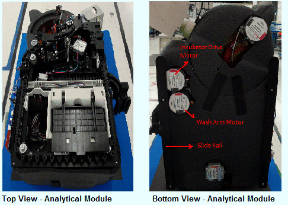
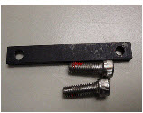

Incubator Drive Motor, Drive Belt, and Lower Drive Pulley Replacement
This procedure describes how to replace the Access 2 incubator drive motor, drive belt, and drive pulley.
Tools required:
- 5/32-inch L-shaped allen wrench
- 9/64-inch L-shaped allen wrench
- 1/8-inch L-shaped allen wrench
- 5/64-inch L-shaped allen wrench
- 3/16-inch punch for older drive pulley
- Hammer for older drive pulley
- Scissors or cable-tie cutter
Supplies required:
- Incubator Drive Motor Kit (contains drive motor, drive pulley, drive belt, nylon standoffs, motor screws, and pulley set-screws)
- Cable-tie
Use these reference pictures to locate the incubator drive components.

-
Prepare the analytical module.
-
Install the analytical module inversion tools.

- Insert the standoff with the most threads into the hole in the light shield and tighten the standoff.
- Insert and tighten each of the remaining three standoffs into the threaded holes on the three corners of the module.
-
Install the analytical module inversion tools.
-
Access the incubator drive motor.
-
Remove the foam installation cover.
Caution: Do not damage the retaining clips or Velcro straps. The foam cover helps to maintain the temperature of the analytical module.
- Remove the velcro straps from the side, top, and bottom.

- Remove the retaining clips from both sides.

- Remove the velcro straps from the side, top, and bottom.
-
Remove the foam installation cover.
-
Remove the incubator drive motor.
Note: Incubator drive motor and lower drive pulley do not have to be the same version, aluminum (silver) or plastic (white). The instrument was verified for operation with any combination of plastic or aluminum drive motor and pulley.
-
Remove the four screws that secure the incubator drive motor to the analytical module.
Note: Do not discard the holder brackets for the motor screws. The brackets are reused.
- Use the 5/32-in allen wrench to loosen the bottom motor screws.
- Remove the bottom motor screws and the holder bracket. Place the screws to the side.

- Use 5/32-in allen wrench to loosen the top motor screws
- Remove the top motor screws and holder bracket. Place the screws to the side.

-
Remove the four screws that secure the incubator drive motor to the analytical module.